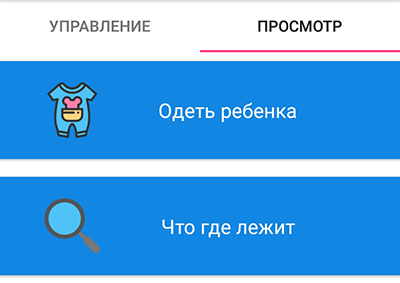
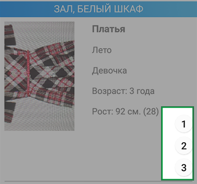
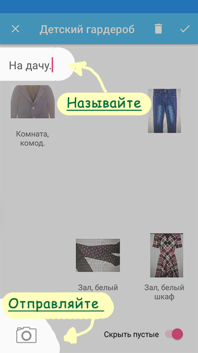

Комплекты
Для начала, что такое комплект? Комплект одежды - это набор вещей, которые вы можете собрать в одном месте для своих целей.
Например, понять как они смотрятся рядом, или отправить мужу, чтобы он понял, во что надо одеть детей.
Как составить комплект
|  |
Запускаем отчет ("Одеть ребенка" или "Что где лежит")
|
|  |
| Добавляем нужную вещь в один из трех "временных комплектов" кнопками 1, 2, 3 |
Как пользоваться комплектами
|  |
| Если комплект понадобится дальше, назовите его и сохраняйте. Если же нет - удаляйте. |
| Чтобы поменять визуальное расположение вещей в комплекте, просто нажмите на вещь, подержите немного, а потом перетащите в нужное место. |
| Чтобы отправить комплект, просто сделайте скриншот экрана. |
Если остались вопросы, пожелания - пишите!
А если появилось непреодолимое желание похвалить автора и оценить приложение - не сдерживайте себя, ставьте оценки!
Это очень приятно - читать ваши отзывы.